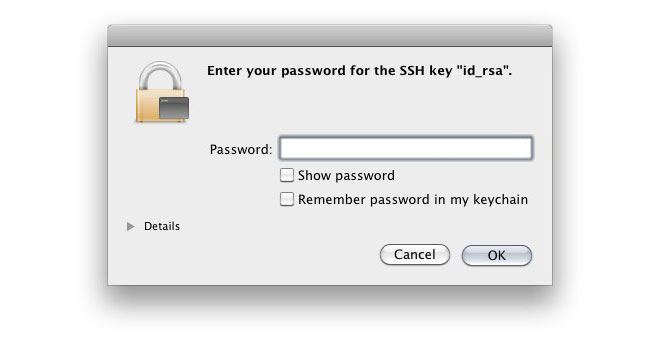

This article will walk you through the process of securing your SSH keys and configuring an authentication agent so that you won't have to re-enter your passphrase every time you use your keys.
Why do I need a passphrase?
Passwords aren't very secure. If you use one that's easy to remember, it's also easier to guess or brute-force (try many options until one works). If you use one that's random, it's hard to remember, and thus you're more inclined to write it down. Both of these are Very Bad Things.
This is why you're using SSH keys. Of course, using a key without a passphrase is basically the same as writing down a random password: anyone who gains access to your computer has gained access to every system you use that key with. This is also a Very Bad Thing. The solution is to add a passphrase to the SSH key for an extra layer of security.
But I don't want to enter a long passphrase every time I use the key!
Neither do I! Thankfully, there's a nifty little tool called ssh-agent that can securely save your passphrase, so you don't have to re-enter it. If you're on OS X Leopard or later your keys can be saved in the system's keychain to make your life even easier. Most Linux installations will automatically start ssh-agent for you when you log in.
Adding or changing a passphrase
You can change the passphrase for an existing private key without regenerating the keypair. Just type the following command:
ssh-keygen -p # Start the SSH key creation process # Enter file in which the key is (/Users/you/.ssh/id_rsa): [Hit enter] # Key has comment '/Users/you/.ssh/id_rsa' # Enter new passphrase (empty for no passphrase): [Type new passphrase] # Enter same passphrase again: [One more time for luck] # Your identification has been saved with the new passphrase.
If your key already has a passphrase, you will be prompted to enter it before you can change to a new passphrase.
Auto-launching ssh-agent on msysgit
ssh-agent is a tool that provides a secure way of storing and using your SSH keys.
You can run ssh-agent automatically when you open bash. Copy the following lines and paste them into your ~/.profile or ~/.bashrc file:
# Note: ~/.ssh/environment should not be used, as it
# already has a different purpose in SSH.
env=~/.ssh/agent.env
# Note: Don't bother checking SSH_AGENT_PID. It's not used
# by SSH itself, and it might even be incorrect
# (for example, when using agent-forwarding over SSH).
agent_is_running() {
if [ "$SSH_AUTH_SOCK" ]; then
# ssh-add returns:
# 0 = agent running, has keys
# 1 = agent running, no keys
# 2 = agent not running
ssh-add -l >/dev/null 2>&1 || [ $? -eq 1 ]
else
false
fi
}
agent_has_keys() {
ssh-add -l >/dev/null 2>&1
}
agent_load_env() {
. "$env" >/dev/null
}
agent_start() {
(umask 077; ssh-agent >"$env")
. "$env" >/dev/null
}
if ! agent_is_running; then
agent_load_env
fi
# if your keys are not stored in ~/.ssh/id_rsa.pub or ~/.ssh/id_dsa.pub, you'll need
# to paste the proper path after ssh-add
if ! agent_is_running; then
agent_start
ssh-add
elif ! agent_has_keys; then
ssh-add
fi
unset env
Tip: If your private keys are not stored in ~/.ssh/id_rsa or ~/.ssh/id_dsa, you must add their paths with the ssh-add command so that your SSH authentication agent knows where to find them. For example:
ssh-add ~/.my_other_ssh/id_rsa
Now, when you first run Git Bash, you are prompted for your passphrase:
# Initializing new SSH agent... # succeeded # Enter passphrase for /c/Users/you/.ssh/id_rsa: # Identity added: /c/Users/you/.ssh/id_rsa (/c/Users/you/.ssh/id_rsa) # Welcome to Git (version 1.6.0.2-preview20080923) > # Run 'git help git' to display the help index. # Run 'git help' to display help for specific commands.
The ssh-agent process will continue to run until you log out, shut down your computer, or kill the process.
If you want ssh-agent to forget your key after some time, you can configure it to do so by running ssh-add -t <seconds>.
This section was written with help from this post.
OS X Keychain
If you are on OS X Leopard or later, ssh-agent runs automatically for you. It will also integrate with the keychain, so you can unlock your keys with it. This has some major advantages over a command-line based setup: for example, it protects your input from being copied or spied upon by universal access or low-level keyboard routines.
The default private key files (.ssh/id_rsa, .ssh/id_dsa, and .ssh/identity) should be handled automatically. If you have a private key with a different name, you can add it by typing ssh-add -K path/to/my_key.
Tip: Make sure you're using the default OS X ssh-add command, and not one installed by macports, homebrew, or some other external source.
When you first try to use the key, you are prompted to enter your passphrase:

If you choose to save the passphrase with your keychain, you won't have to enter it again. Instead you'll simply need to unlock your keychain.
This section was written with help from this guide. If you would like to use more paranoid keychain settings like locking after sleep, check out this guide.